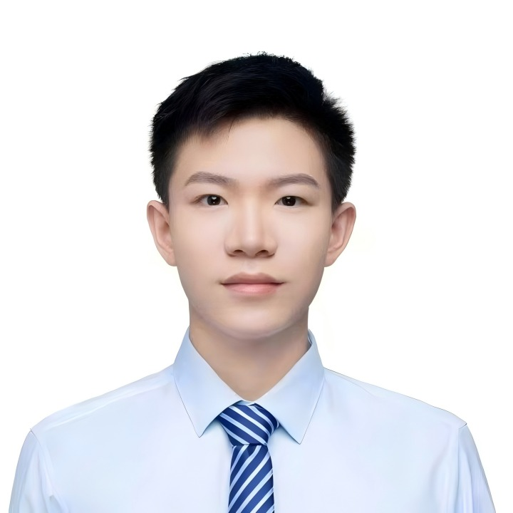

Congyi Fan (范聪毅)
|  |
Undergraduate Student, |
Biography
Hi👋 nice to meet you!
Currently I am an undergraduate student majoring in Computer Science and Technology (Information Security) at Harbin Engineering University (HEU), serving as a research assistant to Associate Professor Guan Jian.
My research is jointly supervised by Associate Professor Guan Jian at HEU, Researcher Pengming Feng from the State Key Laboratory of Space-Ground Integrated Information Technology (SGIIT), and Dr. Qiaoxi Zhu from the University of Technology Sydney.
My research is guided by the aspiration to advance scientific and technological progress. My recent work focuses on Generative Models, 3D Vision and Multimodal. If you are also interested, please feel free to contact me.
Education
B.E., Information Security, Harbin Engineering University, 2022.09-Now
Interests
Generative Models
3D Vision
Multimodal
NEWS
[2025.05] 1 papers was accpeted by ICCV 2025. [News]
[2025.04] Selected as a Pioneer in Innovation and Entrepreneurship (Top 0.03%).[News]
[2025.04] Received Outstanding Final Report Award for the National Undergraduate Training Program for Innovation and Entrepreneurship.
[2025.03] New paper released! Align Your Rhythm: Generating Highly Aligned Dance Poses with Gating-Enhanced Rhythm-Aware Feature Representation.
[2024.12] Awarded First Prize at the 9th National Youth Artificial Intelligence Innovation and Entrepreneurship Conference.
[2024.11] FastDrag was successfully selected as an Outstanding Achievement in the First Academic Annual Conference of Harbin Engineering University. [News]
[2025.05] 1 papers was accpeted by NeurIPS 2024. [News]
[2024.09] I have received a letter of appreciation from the Heilongjiang Provincial Department of Education.
[2024.07] As the project leader, successfully led the application for the 2024 National Undergraduate Training Program for Innovation and Entrepreneurship (Top 4.16%).
[2023.09] Participated in the 2023 Forum on Technological Innovation for the Maritime Power Strategy.
[2023.08] Participated in the 18th National Conference on Computer-Supported Cooperative Work and Social Computing.
Research
Selected Publications
Thanks to all the collaborators for their great work!
Check out Google Scholar for more information.
Congyi Fan, Jian Guan, Xuanjia Zhao, Dongli Xu, Youtian Lin, Tong Ye, Haiwei Pan, Pengming Feng .
Align Your Rhythm: Generating Highly Aligned Dance Poses with Gating-Enhanced Rhythm-Aware Feature Representation.
in IEEE/CVF International Conference on Computer Vision (ICCV), 2025. [arXiv][Demo][Code]
Xuanjia Zhao, Jian Guan, Congyi Fan, Dongli Xu, Youtian Lin, Haiwei Pan, Pengming Feng .
FastDrag: Manipulate Anything in One Step.
in Annual Conference on Neural Information Processing Systems (NeurIPS), 2024. [arXiv][Demo][Code]
Congyi Fan*, Shitong Fan*, Feiyang Xiao, Wenbo Wang, Xinyi Che, Qiaoxi Zhu, Jian Guan .
GISP@HEU's Submission to the DCASE 2025 Challenge: Stereo SELD Task.
in Dcase 2025 Technical Report. [Paper]
Experiences
Research Intern, Guangdong Key Laboratory of New Security and Intelligence Technology, HITSZ, 2024.07-2024.11
Research Intern, State Key Laboratory of Space-Ground Integrated Information Technology (SGIIT), National Key Laboratory, 2025.06-now
Supervised by Pengming Feng and Jian Guan
Academic Service
Conference Reviewer / TPC Member
IEEE International Conference on Multimedia & Expo (ICME) 2024, 2025
Chinese Conference on Pattern Recognition and Computer Vision (PRCV) 2025
Competitions
Ranked 7th globally in Task 1 and 4th globally in Task 2 of the EEG-Music Emotion Recognition challenge at ICASSP 2024 Grand Challenge, 2024.01.
1st in 9th National Youth Artificial Intelligence Innovation and Entrepreneurship Conference, 2024.12.
3rd in Northeast Region National Undergraduate Information Security Competition, 2024.07.
Honorable Mention in American Undergraduate Mathematical Contest in Modeling, 2024.05.
Heilongjiang Province 1st in National Undergraduate Mathematical Contest in Modeling, 2023.11.
(Total of 2 national awards and 7 provincial awards)